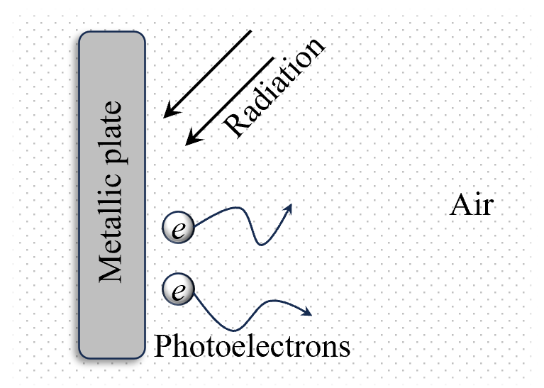
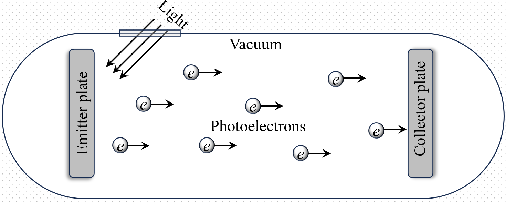
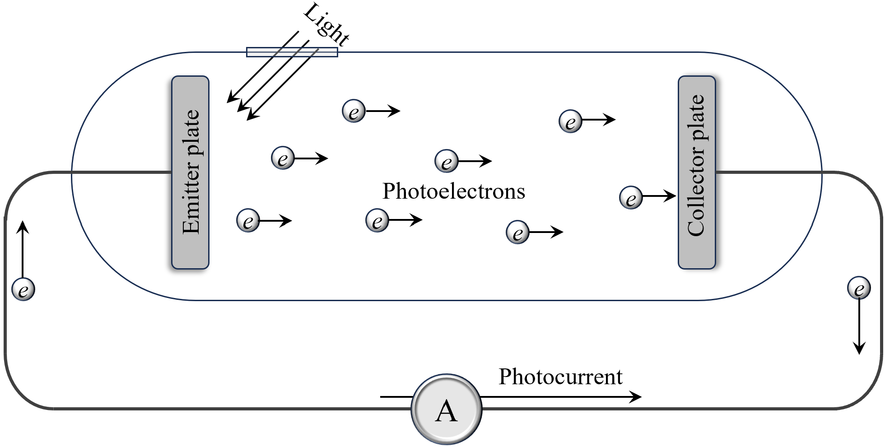
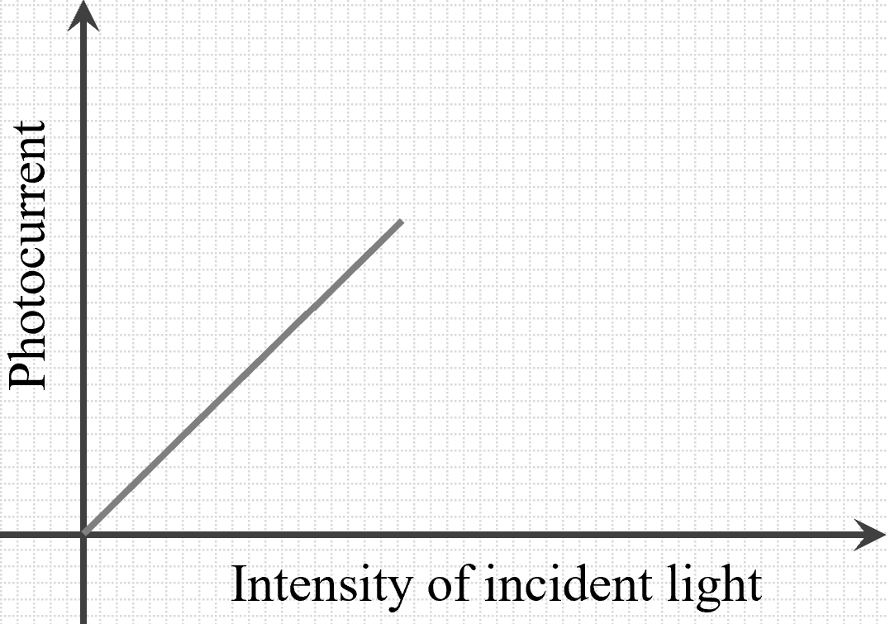
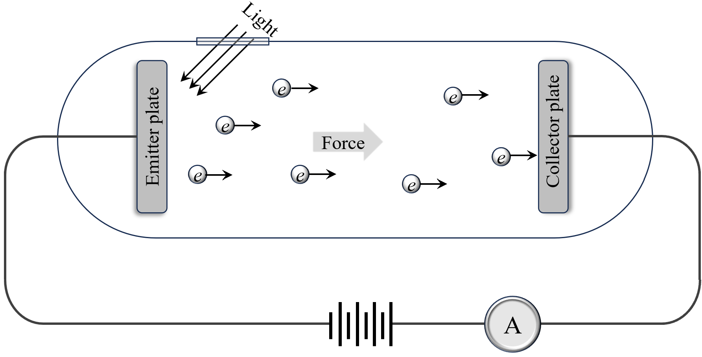
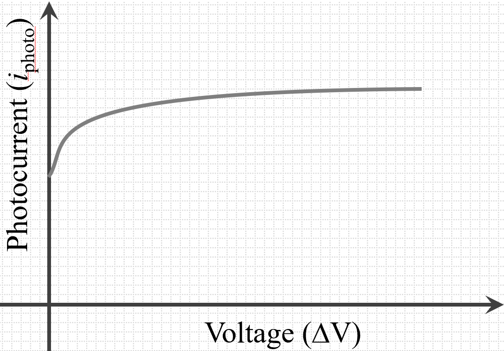
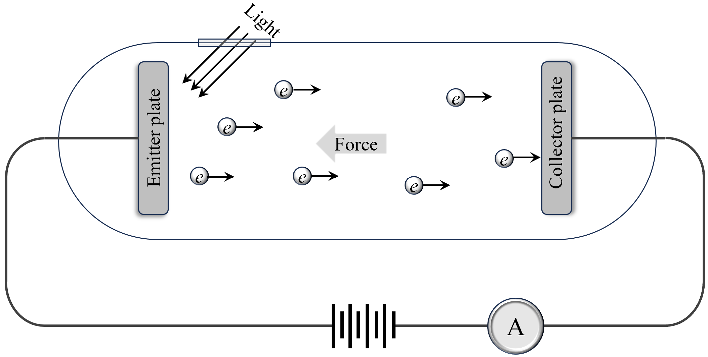
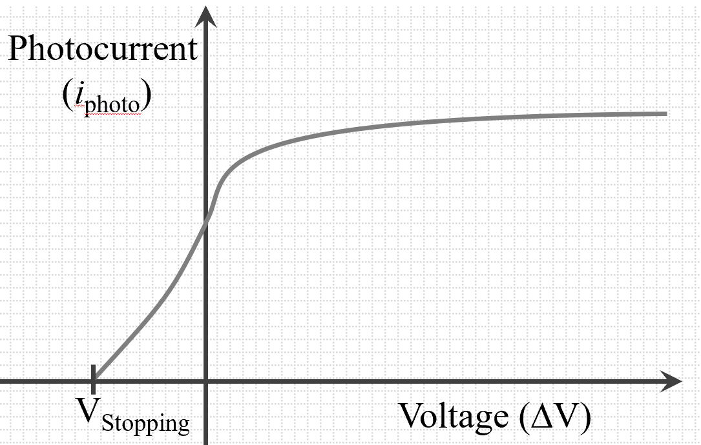
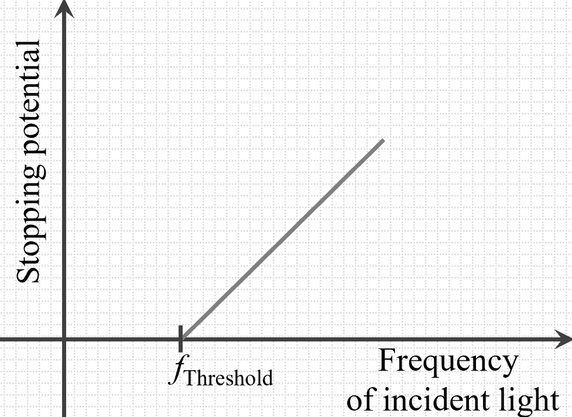
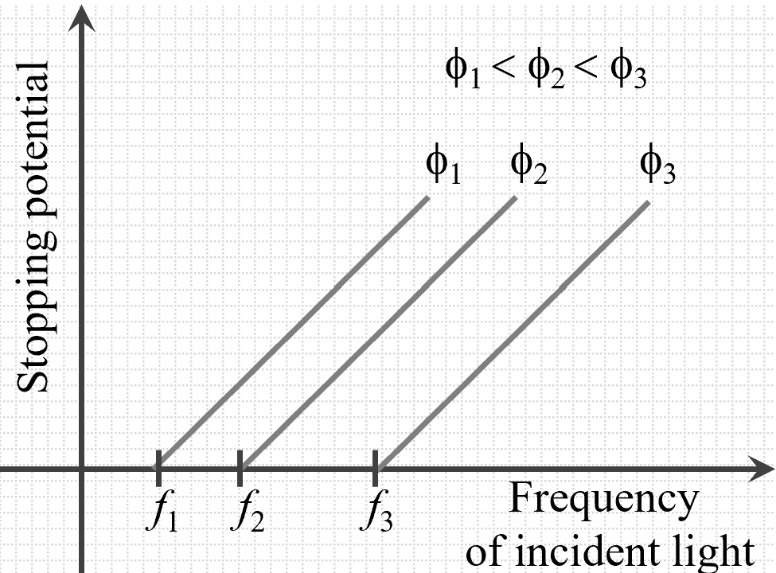

In 1899, Albert A. Michelson confidently stated that the realm of physics had
reached its pinnacle, declaring that no new significant discoveries were anticipated
in the field of physics. This statement reflected the prevailing belief of the time
that the major principles of physics had already been uncovered, leaving little room
for groundbreaking advancements.
In 1887, Heinrich Hertz first observed the photoelectric effect, a phenomenon that
would later be explained by Albert Einstein in 1905. This groundbreaking explanation
marked the dawn of modern physics by providing a new understanding of the nature of
light and its interaction with matter.
Do you think physics has now reached its highest level, with no more significant
discoveries possible? Be frank!
Yes, we've reached the pinnacle of physics
No, there are always more discoveries to be made
The photoelectric effect is intrinsically linked to the emission of electrons from a
metal surface when it is exposed to light. Any electron once ejected from a metallic
surface faces the attractive force of the positively charged metal plate, which
tends to pull them back. Consequently, only electrons with sufficient kinetic energy
can overcome this attraction and escape the metal surface. This minimum energy
required for an electron to be emitted is known as the work function of the metal.
Work Function
(\(\phi\)): It is the least amount of energy needed to remove an
electron from the surface of a metal.
To simplify calculations perticularly in modern physics, the electron volt
(eV) was introduced as a unit of energy. One electron volt is defined as the energy
gained by an electron when it is accelerated through a potential difference of one
volt. For example, the work function of cesium is approximately \(2.14 \,
\text{eV}\), while that of platinum is about \(5.65 \, \text{eV}\). Thus, a work
function of \(3 \, \text{eV}\) implies that an electron must acquire at least \(3 \,
\text{eV}\) of energy to be emitted.
The electron volt (eV) is a unit used in modern physics. What does it represent?
The speed of an electron when accelerated by one volt
The energy gained by an electron across a one-volt potential
The voltage required to emit an electron from a metal
Electrons can be emitted from a metallic surface by absorbing energy through
various
mechanisms, including thermionic emission, field emission, and the photoelectric
effect.
Thermionic Emission
Thermionic emission occurs when electrons gain sufficient thermal energy
to
overcome the work function of the metal. This process is
temperature-dependent
and is commonly observed in incandescent light bulbs.
Field Emission
Field emission involves the release of electrons from a metal surface due
to a
strong electric field. This phenomenon is utilized in devices like
electron
microscopes.
Photoelectric Effect
The photoelectric effect involves the emission of electrons from a metal
surface
when it is exposed to light of sufficient frequency. This effect is the
primary
focus of our discussion.
While there are multiple methods through which electrons can be emitted, our primary
focus is on the photoelectric effect (PEE), which has significant implications in
the development of quantum physics.
Do you think the photoelectric effect can be easily observed in open air without
specialized equipment?
Yes, it can be easily observed in open air
No, it is not easily observed without equipment
It depends on the light source used
The Photoelectric Effect
When light irradiates a metallic surface, it can cause electrons to be emitted from
that surface. Although the photoelectric effect
occurs ubiquitously, it is often challenging to observe directly because the emitted
electrons quickly disperse into the surrounding air. This dispersion makes it
difficult to detect the effect without specialized equipment.

Figure: Schematic diagram of the
Photoelectric
Effect.
Therefore, a specialized experimental setup is necessary to detect and analyze the
photoelectric effect effectively. This setup ensures that the emitted electrons are
captured and measured accurately, providing clear evidence of the phenomenon.
Are there multiple ways in which electrons can be emitted from a metallic
surface, or is it only possible through the photoelectric effect?
Yes, multiple emission mechanisms exist
No, only the photoelectric effect causes emission
The initial experimental setup for observing the photoelectric effect involves
directing radiation onto a metallic plate. In an open environment, the emitted
electrons are quickly lost to the surrounding air, making the effect undetectable.
This limitation is evident in the following diagram.
Figure: Basic Setup for Photoelectric
Effect.
To overcome this limitation, the setup is modified to include a vacuum chamber,
which prevents the emitted electrons from dispersing into the air. The vacuum
chamber houses two plates: an emitter plate where electrons are emitted and a
collector plate to capture the emitted electrons. This modification is shown in the
following diagram.

Figure 3: Modified Setup with Vacuum Chamber.
A significant challenge arises when the emitter plate accumulates a positive charge
due to the continuous loss of electrons. As electrons are ejected from the metal
surface, the emitter plate becomes increasingly positively charged. This positive
charge creates an attractive force that opposes the emission of additional
electrons, eventually hindering further electron emission. To mitigate this issue, a
conducting wire is connected between the collector plate and the emitter plate. This
connection allows the returning electrons to flow back and neutralize the positive
charge on the emitter plate, thereby maintaining a steady emission of electrons.
Furthermore, a highly sensitive ammeter is integrated into the conducting wire to
measure the photocurrent—the flow of electrons from the emitter plate to the
collector plate. The ammeter provides a quantitative measure of the number of
electrons being emitted and captured, serving as tangible evidence of the
photoelectric effect occurring within the experimental setup. This ammeter reading
is crucial as it confirms the continuous emission of electrons under the influence
of incident light, as depicted in the final diagram below.

Figure: Final Setup with Ammeter for
Measuring Photocurrent.
The ammeter detects the flow of photoelectrons, thereby confirming the photoelectric
effect. The emitted electrons that reach the collector plate constitute the
photocurrent, while the electrons themselves are referred to as
photoelectrons.
Heinrich Hertz initially observed the photoelectric effect, but it was Albert
Einstein's theoretical explanation that provided a comprehensive understanding,
leading to significant advancements in quantum physics.
Why is a vacuum chamber included in the modified setup for observing the
photoelectric effect?
To prevent electron dispersion
To increase light intensity
To cool down the metal plate
As electrons leave the emitter plate, why do you think it becomes harder for
more electrons to escape without a return path?
Because the light source weakens
Because the plate accumulates a positive charge
Because the plate becomes too hot
Because electrons are repelled by other electrons
Why do you think an ammeter is included in the final setup of the experiment?
To adjust the voltage between plates
To control the amount of light hitting the metal
To stabilize the temperature of the metal plate
To measure the photocurrent
Through a series of meticulous experiments, scientists aimed to unravel the behavior
of light and its interaction with metallic surfaces. The key observations from these
experiments include:
Observations with Intensities
In these experiments, the intensity of the incident light was varied
while keeping its frequency constant. It was observed that the
photocurrent increases with an increase in light
intensity. This relationship is illustrated in the graph below, which
shows the direct proportionality between light intensity and
photocurrent.

Figure: Graph of Light
Intensity vs. Photocurrent.
Does increasing the light intensity affect the number of electrons
emitted in the photoelectric effect?
Yes, it increases the number of emitted electrons
No, it increases the speed of electrons
Explanation: This implies that a higher intensity
results in
the emission
of more electrons per unit time. It is important to understand that this
increase in photocurrent does not signify an increment in the speed of
the
photoelectrons. Instead, the current increase strictly indicates an
increase in the number of electrons being emitted.
Additionally, while higher intensity leads to more electrons being
emitted,
it does not affect the speed (kinetic energy) of the individual
photoelectrons. If the speed of electrons were to increase, it would
result
in electrons arriving at the collector plate more quickly. However, this
does not translate to a change in current, as current is dependent on
the
number of electrons rather than their speed.
For analogy, imagine 10 buses leave from city A to city B per day.
If the roads are improved, buses will travel faster and reach city B in
less time. However, the number of buses leaving city A remains the same,
and consequently, the number of passengers arriving at city B does not
increase. Similarly, increasing the intensity of light results in more
electrons being emitted without altering their individual speeds.
In the bus analogy, do more buses per day mean that each bus travels
faster?
Yes, more buses travel faster
No, more buses don’t mean faster travel
Observations with Accelerating Voltage
By applying an accelerating voltage to the photoelectrons, an electric
field is created to influence their motion towards the collector
plate.
It was observed that the photocurrent initially increases with the
application of accelerating voltage and eventually saturates at a
certain value. This behavior is depicted in the graph below, where the
photocurrent becomes constant after reaching a saturation current
despite further increases in accelerating
voltage.

Figure: Setup for accelerating
the photoelectrons.

Figure: Graph of Accelerating
Voltage vs. Photocurrent.
Explanation: The reason behind this saturation is
rooted
in the varying speeds of the
emitted electrons. After electrons leave the surface, they possess
different
kinetic energies, resulting in different speeds. Some electrons are
emitted
with lower speeds, leading to a buildup of electrons near the emitter
plate,
effectively creating an electron cloud. This accumulation acts as a
barrier,
preventing the newly emitted slower electrons from reaching the
collector plate and
causing these slower electrons to return to the emitter plate.
Therefore, these electrons remain undetected by the ammeter, hence they
do
not contribute to the photocurrent.
This "traffic jam" effect caused by the electron cloud is minimized
by using an accelerating voltage for the electrons.
When a sufficiently high accelerating voltage is
applied,
the electric field becomes strong enough to pull the electron cloud
towards the collector plate, eliminating the buildup and
allowing
all emitted electrons to contribute to the photocurrent. Also,
further
increases in accelerating voltage do not lead to a higher photocurrent,
resulting
in a saturation current.
What effect does the lack of accelerating voltage have on the motion
of slower electrons?
They form an electron cloud near the emitter
They travel faster towards the collector
They lose all energy and stop moving
When photocurrent reaches saturation, will increasing the
accelerating voltage further increase the current?
Yes, it will keep increasing the current
No, the current remains constant at saturation
Observations with Retarding Voltage
A retarding voltage, which opposes the motion of photoelectrons, was
applied to study its effect on photocurrent. It was found that as the
retarding voltage increases, the photocurrent decreases gradually until
it reaches zero at a certain voltage known as the stopping
potential. This trend is illustrated in the diagram below,
showing the decline of photocurrent with increasing retarding
voltage.

Figure: Setup for retarding the
photoelectrons.

Figure: Graph of Retarding
Voltage vs. Photocurrent.[Negative side of voltage
indicates retarding voltage]
Explanation: When a small retarding potential is
applied, it exerts a slight opposing force on the emitted
photoelectrons. This results in a reduction of photocurrent as the
electrons with lesser kinetic energy are forced to return to the
emitter plate. As
the retarding voltage is increased, more and more electrons are unable
to reach the collector plate. Eventually, a point is reached where even
the most energetic electrons cannot overcome the retarding potential,
causing the photocurrent to drop to zero. This critical voltage is
termed the stopping potential.
The stopping potential can be used to determine the maximum kinetic
energy (\(K_{\text{max}}\)) of the ejected electrons. The relationship
between the stopping potential (\(V_s\)) and the kinetic energy is given
by the equation:
This formula, based on energy conservation for the motion of
electrons between the plates, allows us to calculate the maximum
kinetic energy of the
emitted photoelectrons based on the measured stopping potential,
providing valuable insights into the energy dynamics of the
photoelectric effect.
What happens to photocurrent when retarding voltage is increased?
It decreases, eventually reaching zero
It increases to a maximum
It stays constant
Is the stopping potential the voltage required to stop all emitted
electrons from reaching the collector plate?
Yes, it stops all emitted electrons
No, it stops only the fastest electrons
Observations with Frequency Variation
When the frequency of the incident light was varied, several critical
observations emerged. Below a certain threshold frequency, no electrons
were emitted regardless of the light's intensity. Above this threshold
frequency,
electrons were emitted, and their stopping potential
increased with the
frequency of the incident light. This relationship is depicted in the
graph below, which shows how the stopping potential varies with
frequency.

Figure: Graph of Stopping
Potential
vs. Frequency.
Explanation: Increasing the frequency of the incident
light leads to the ejection of electrons with greater kinetic energy.
Below a certain threshold frequency, will increasing the light
intensity result in electron emission?
Yes, higher intensity will emit electrons
No, electrons will not be emitted
Observations with Stopping Potential
It was observed that the stopping potential depends solely on the
frequency of the incident light and remains unaffected by changes in
light intensity. Ideally, based on our previous understanding of light
as a wave, one might expect that increasing the intensity (brightness)
of light would influence the stopping potential. However, the
experiments demonstrated that the stopping potential is independent of
light intensity. This shows that the kinetic energy of individual
electrons is a function of light frequency, not its intensity.
Observations with Different Metallic Surfaces
Different metals have varying work functions, leading to different
threshold frequencies and stopping potentials. For a given frequency,
the stopping potential varies depending on the metal used, as each metal
requires a different minimum energy to eject electrons.
The graph below shows the variation of stopping potential (and hence
the maximum kinetic energy of photoelectrons) with frequency for
different metallic
surfaces.

Figure: Graph of Stopping
Potential vs. Frequency for Various Metals.
If the frequency of incident light increases, what happens to the
stopping potential?
It increases
It decreases
It remains the same
Does the work function vary between different metals, affecting the
frequency needed for electron emission?
Yes, each metal has a unique work function
No, all metals have the same work function
Observations of Time Duration
Experiments measured the time taken for electrons to be emitted after
the incidence of light. Contrary to the expectations of the classical
wave theory, electron emission occurred almost instantaneously,
regardless of light intensity. The wave theory suggested that energy
absorption and accumulation should require a finite amount of time,
especially at lower intensities (possibly on the order of
hours), but this was not observed as it was observed to
occur in a matter of micro- to nanoseconds.
These observations collectively revealed significant inconsistencies with the
classical wave theory of light, indicating the necessity for a new theoretical
framework to explain the photoelectric effect.
The aforementioned observations posed significant challenges to the classical wave
theory of light. The primary inconsistencies identified are:
Intensity Problem: The maximum kinetic
energy (\(K_{\text{max}}\)) of emitted electrons is independent of light
intensity, contradicting the wave theory which posited that energy absorption
should scale with intensity.
If energy is absorbed from light continuously like a wave, would
increasing the intensity make electrons gain more kinetic energy? Why or
why not?
Yes, higher intensity should increase kinetic energy
No, intensity does not affect kinetic energy here
Frequency Problem: There exists a
threshold frequency below which no electrons are emitted, irrespective of the
light's intensity. The wave theory could not account for this frequency
dependence of electron emission.
Time Lag Problem: Electron emission
occurs instantaneously upon light exposure, defying the wave theory's
expectation of a measurable time lag due to energy accumulation.
These inconsistencies suggested that the energy of incident light is not absorbed
continuously as waves, but rather in discrete packets, challenging the fundamental
principles of classical physics. This realization set the stage for the development
of quantum theories that could adequately explain the observed phenomena.
Do you think these observations reveal limits in classical physics? What might
they suggest about the nature of light?
Yes, they suggest light behaves differently than waves
No, they still align with classical physics
Building upon Max Planck's groundbreaking hypothesis of energy quantization, Albert
Einstein
proposed a revolutionary explanation for the photoelectric effect in 1905. Einstein
introduced the concept of photons, which are discrete packets of
light energy, each carrying energy proportional to its frequency. This was a
significant departure from the classical wave theory, presenting a quantum view of
light that paved the way for the development of quantum mechanics.
According to Einstein's theory, what determines the energy of a photon?
Its frequency
Its intensity
According to Einstein, when a photon interacts with an electron in a metallic
surface, it transfers its energy to the electron. The energy of the photon (\(E\))
is given by:
If the frequency (\(\nu\)) of the incident light increases, what happens to the
energy (\(E\)) of the photon?
The energy increases
The energy decreases
Einstein's key assumption was that electrons absorb energy from individual photons
rather than from the light wave as a whole. If the energy of the photon exceeds the
metal's work function (\(\phi\)), the excess
energy is converted into the kinetic energy (\(K_{\text{max}}\)) of the emitted
electron. This relationship is mathematically expressed as:
\(\qquad K_{\text{max}} = h\nu - \phi\)
If the energy of the photon is less than the work function of the metal,
electrons will still be emitted but with less kinetic energy. Is this statement
true or false?
True
False
This equation elegantly resolves the previously noted inconsistencies with the
classical wave theory:
Intensity Problem: The classical wave
theory suggested that increasing the light's intensity would increase the energy
absorbed by electrons, thereby increasing their kinetic energy. However,
experiments showed that while the photocurrent (the number of
electrons emitted) increases with light intensity, the maximum kinetic energy
(\(K_{\text{max}}\)) of the emitted electrons remains unchanged. Einstein's
photon theory explains this by stating that increasing intensity means more
photons are striking the surface, resulting in more electrons being emitted, but
each photon still carries the same amount of energy determined by its frequency.
According to Einstein's photon theory, increasing the intensity of light
will increase the maximum kinetic energy of emitted electrons. Is this
statement true or false?
True
False
Frequency Problem: The wave theory
could not explain why electrons are only emitted when the incident light exceeds
a certain threshold frequency (\(\nu_0\)), regardless of the light's intensity.
Einstein's equation clearly shows that only photons with frequency \(\nu \geq
\nu_0\) (where \(h\nu_0 = \phi\)) have enough energy to eject electrons. Below
this frequency, no electrons are emitted, no matter how intense the light is.
According to Einstein's theory, increasing the intensity of light with a
frequency below the threshold frequency can cause electrons to be emitted.
Is this statement true or false?
True
False
Time Lag Problem: According to the wave
theory, electrons should take time to accumulate enough energy to overcome the
work function, especially at low light intensities. However, experiments
demonstrated that electron emission occurs almost instantaneously with the
exposure to light. Einstein's photon theory accounts for this by positing that
each photon interacts with a single electron, providing it with the necessary
energy in a single, instantaneous event.
According to Einstein's theory, the instantaneous emission of electrons
occurs because each electron absorbs energy gradually over time from the
light wave. Is this statement true or false?
True
False
Einstein's explanation not only accounted for the experimental observations but also
provided strong support for the quantum theory of light. By introducing the concept
of photons, Einstein bridged the gap between wave and particle theories of light,
contributing significantly to the dual nature of light—a cornerstone of quantum
mechanics.
Furthermore, Einstein's photon theory has far-reaching implications beyond the
photoelectric effect. It laid the groundwork for understanding phenomena such as
Compton scattering and stimulated emission, which are fundamental to technologies
like lasers and modern electronics.
For his significant contributions to the understanding of the photoelectric effect
and the quantum theory of light, Albert Einstein was awarded the Nobel Prize in
Physics in 1921. His work not only resolved the inconsistencies posed by the
classical wave theory but also revolutionized our comprehension of light and energy
at the quantum level.
Albert Einstein received the Nobel Prize in Physics in 1921 for his work on the
theory of relativity. Is this statement true or false?
True
False